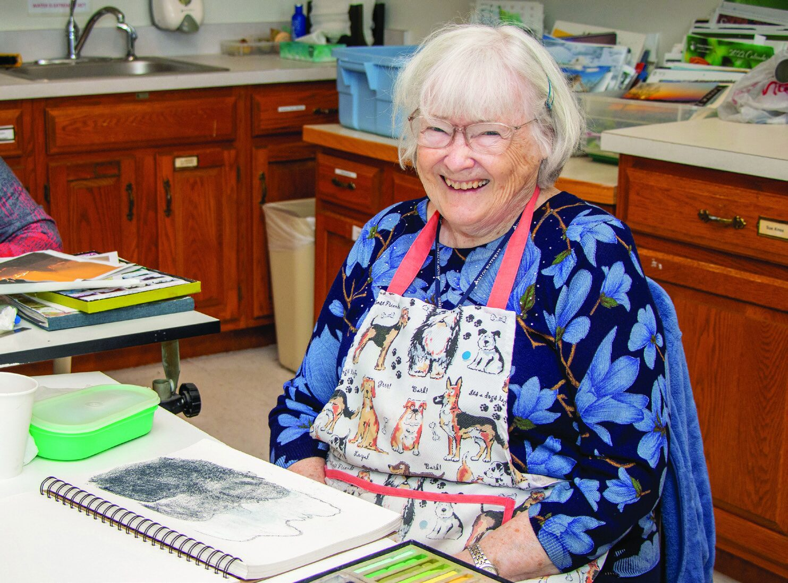
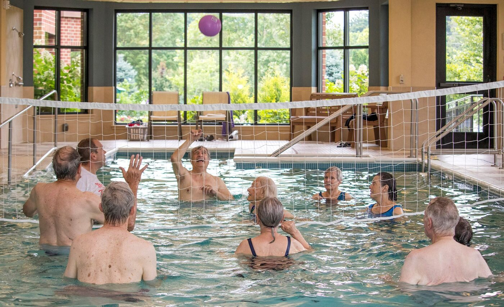
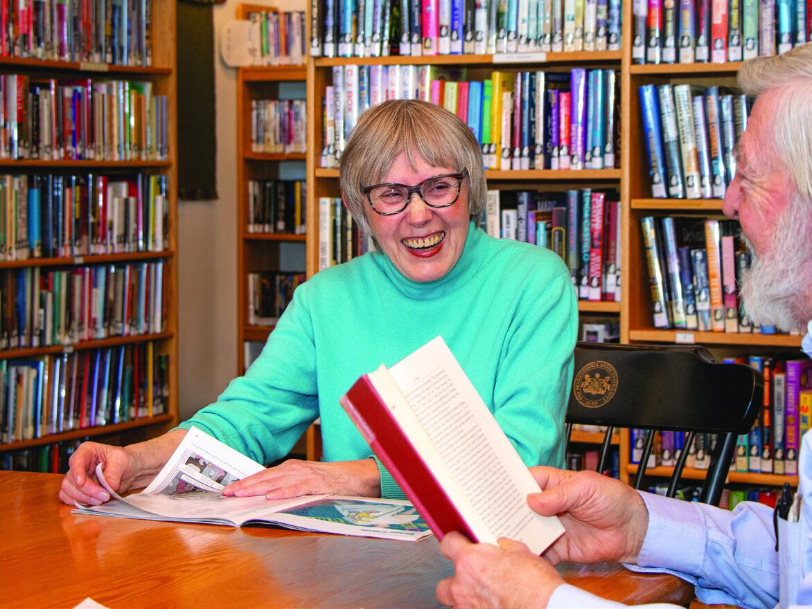
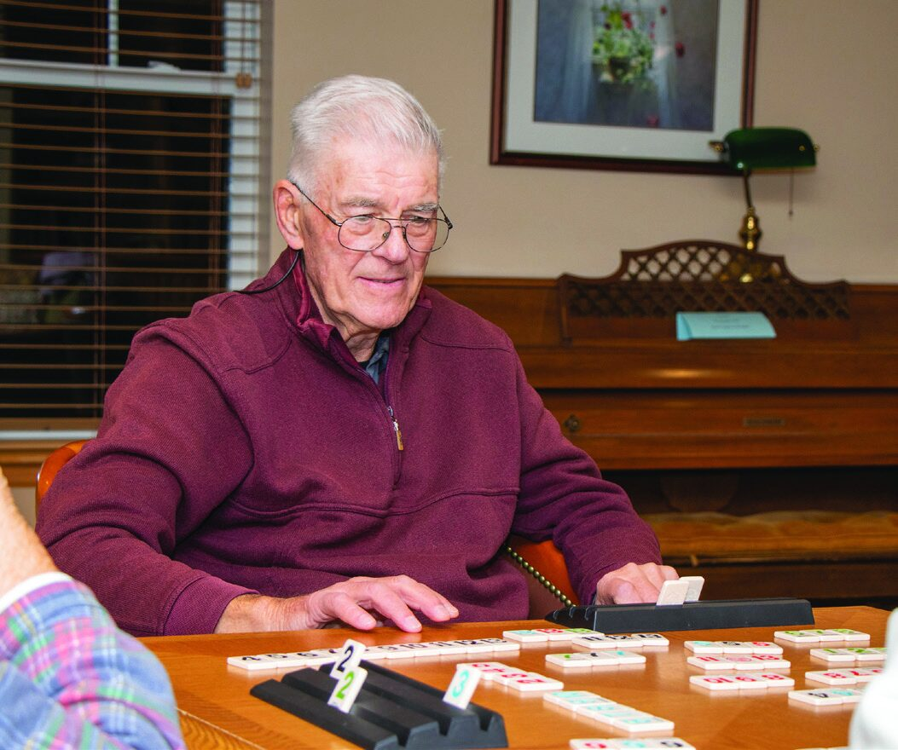

Create
The art studio, gallery, needlework room, and woodshop keep hands busy — plus the Foxdale Chorus, and a writing group that publishes Miscellany, Foxdale’s own literary magazine.
Every day at Foxdale offers countless opportunities to connect, create, and engage.
The Foxdale Village Community Center is a welcoming hub for daily life. Here you’ll find the Café and Dining Room, along with inviting lounges, activity and meeting rooms, the auditorium, mail room, wood shop, art studio, library, billiards, gift shop, and a model railroad room.
A strong sense of community naturally grows in a place where people come together so easily. Whether you’re joining a class, meeting friends for coffee, or simply enjoying the energy of the campus, the Community Center reflects the spirit of Foxdale — a supportive, vibrant environment where everyone can thrive.


Conveniently located on campus, the on-site Wellness Center offers an open, welcoming space for personal and group fitness. Residents enjoy the Healing Waters Therapy Pool for classes, lane swimming, and water volleyball.
Full-time exercise specialists lead weekly classes including beginner yoga, core strength and flexibility, and aqua aerobics — plus a PWR! Parkinson’s Wellness Recovery® program. The Wellness Center also features a full-service salon.
Our naturally beautiful campus provides the perfect backdrop for simple, comfortable living. Flower gardens, landscaped courtyards, and a one-mile marked walking path through the gardens offer daily opportunities for activity or quiet relaxation. The bird and pollinator gardens invite you to pause and enjoy the seasonally changing scenery.
Nearby state parks and trails expand those possibilities further, with options for hiking, fly fishing, and kayaking adventures.
Foxdale offers a range of dining venues to suit just about everyone — restaurant-style dining in the Main Dining Room, a cafeteria-style Café, and the Friendship Bistro with specialty salads, paninis, and custom personal pizzas.
Every meal includes a great selection of healthy entrées, with vegan and low-fat options. Let us do your cooking — some of it, all of it, or just a little bit of it. The choice is yours.
More than sixty special interest and service groups bring people together on campus — and downtown State College and Penn State University are minutes away.

The art studio, gallery, needlework room, and woodshop keep hands busy — plus the Foxdale Chorus, and a writing group that publishes Miscellany, Foxdale’s own literary magazine.

A library with over 11,000 volumes, lectures and performances in the auditorium, and lifelong learning opportunities at Penn State — right down the road.

From book clubs and bridge to flower arranging and volunteering, there’s a group for nearly everything — and room to start a new one.
“Freedom to explore your interests.”
More than 60 resident-led groups
Join us for lunch, take a tour, and meet the people who make Foxdale feel like home.